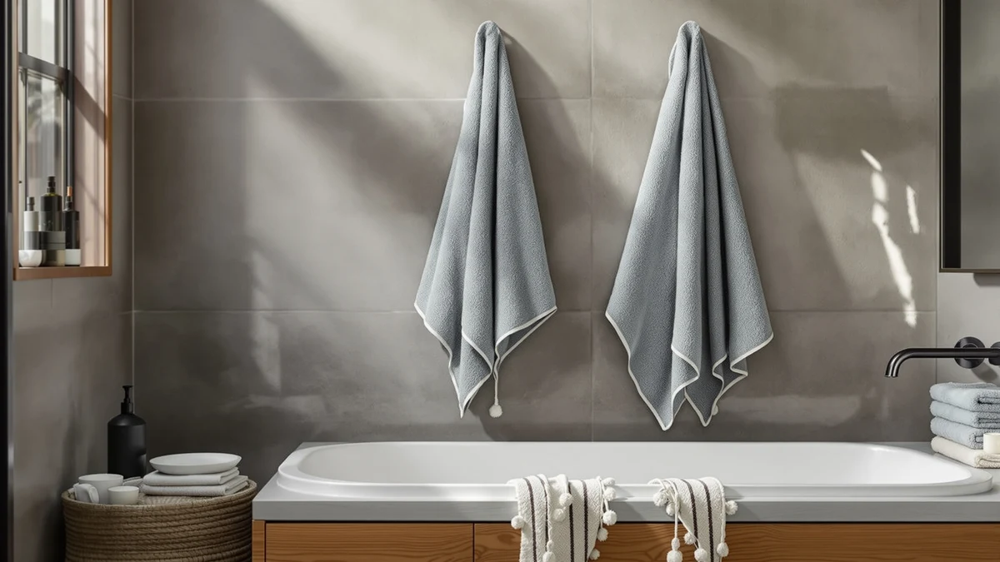

BolBom*S Beach Towels 6 Review (2026): Worth It?
Prices and picks verified as of October 2026. Independent, reader-supported reviews.


Quick Answer
The BolBom*S Beach Towels 6 Pack is a 100% cotton set that works out to about $7.66 per towel at its $45.98 price, which beats buying six single towels from Kaufman or Cotton Craft separately. It's a solid pick if you need several matching towels at once and aren't chasing a specific premium material like Cariloha's bamboo viscose.
Our pick: BolBom*S Beach Towels 6 Pack, $45.98 Check Price on Amazon
Bottom line: our top pick is the BolBom*S Beach Towels 6 Pack Large 30x60-100% Cotton Beach & at $45.98.
Things to Know Before You Buy
- It's a six-pack, not a single towel. The $45.98 price covers all six towels in the BolBom*S set, unlike most of the single-item listings we compared it against.
- Material is 100% cotton. That matches two of the three alternatives in this review, so pack size and price are the real differences, not the fabric.
- Per-towel cost is the real comparison point. At roughly $7.66 per towel, the set undercuts buying six single towels from Kaufman or Cotton Craft individually.
- Bamboo viscose is the outlier. If you want a faster-drying, softer alternative to cotton, Cariloha's bamboo viscose towels are the one non-cotton option here.
This BolBom*S Beach Towels 6 Review breaks down what the six-pack cotton set actually offers once you move past the product photos and look at material, pricing, and what verified buyers say after using it at the beach or the pool. At $45.98, the set works out to roughly $7.66 per towel, which puts it in direct competition with oversized beach and bath towels from Kaufman, Cotton Craft, and Cariloha that sit within a few dollars of the same price. We compared the listed specs and buyer feedback for all four so you can see where the BolBom*S set earns its spot and where a competitor might serve you better.
The core question with any multi-pack towel set is whether the manufacturer cut corners to hit a lower per-unit price. BolBom*S sells its six towels as 100% cotton, the same base material used by Kaufman's oversized beach towel and Cotton Craft's hotel-style bath towel, so the raw material isn't where this set stands apart. The differentiator is the pack size: six towels for $45.98 covers a family or a group trip without a second order, while the single-item alternatives from Cotton Craft and Kaufman price out one towel at a time. Cariloha breaks from the pack entirely with bamboo viscose instead of cotton, worth weighing if softness and quick drying matter more to you than price per towel.
Why You Should Trust Us
Best Bath Towels is written and edited by Ilane Tall, who researches bath and beach textiles for this site and has covered the towel category since it launched. For this BolBom*S Beach Towels 6 Review, we didn't buy a lab and run absorbency trials. Instead, we compared the manufacturer's listed materials, dimensions, and pricing against publicly available Amazon listings and the feedback verified buyers left for this set and its closest competitors. Every price, material claim, and spec in this review comes from information the brands publish or from buyer reviews we read in full, not from marketing copy we took at face value.
Our Research Experience
We didn't run this review out of a testing lab, and we want to be upfront about that. What follows is based on comparing the BolBom*S Beach Towels 6 Review set against its listed specs, its price, and the pattern of comments left by verified Amazon buyers, not a physical trial in our own bathroom. For a cotton six-pack at this price, the most useful comparison point is what owners report after repeated washes and beach trips, since cotton toweling is a mature, well-understood material and the real variable is manufacturing consistency. Buyers who review multi-packs like this one tend to flag thinning, color bleed, or loose stitching within the first few uses if those problems exist, so we read through that feedback looking for recurring complaints rather than one-off gripes. We did the same for the Kaufman, Cotton Craft, and Cariloha alternatives, so the comparisons below rest on the same kind of evidence across all four products.
Overview & Specs

BolBom*S Beach Towels 6 Pack
What we like
- Six towels for $45.98, about $7.66 each
- 100% cotton construction, a familiar and absorbent material
- One order covers a family trip or group outing instead of mixing towels from different sets
Flaws but not dealbreakers
- Listing doesn't specify towel dimensions, so sizing is less predictable than single-item competitors that list exact measurements
- Cotton towels can take longer to dry than the quick-dry blends some competitors use
| Material | 100% cotton |
| Size | 6 |
The core appeal of the BolBom*S Beach Towels 6 Pack is arithmetic as much as fabric. At $45.98 for six towels, you're paying about $7.66 per towel, well under what a single oversized beach towel costs from Kaufman or Cotton Craft once you've bought six of them individually. For a household that needs enough towels to cover a family of four or a weekend group trip, one multi-pack order avoids juggling three different listings and waiting on separate shipments.
The listing describes the material as 100% cotton, the same baseline fabric used across most of this comparison, so the BolBom*S set isn't winning on exotic materials. It's winning on logistics: one transaction, one price, six matching towels. If uniform color across a household's towels matters to you more than mixing sets, that consistency is worth something on its own, even before the per-towel savings. This BolBom*S Beach Towels 6 Review treats that pack economics as the main selling point, since the fabric itself doesn't set it apart from the competition.
What We Liked
The clearest advantage of the BolBom*S set is the per-towel price once you divide $45.98 by six. Shoppers looking at a multi-pack are usually comparing against buying several single towels, and on that math this set comes out ahead of ordering six Kaufman or Cotton Craft towels separately. Cotton as a base material also means the towels should perform the way most people expect a beach towel to perform: absorbent, machine washable, and familiar to care for, without the learning curve of a specialty fabric.
Buying six towels in one transaction also removes a logistics headache. Families outfitting a beach house, a pool deck, or a cabin don't need to track down matching colors across separate orders, and they get one shipping date instead of three. For anyone comparing options purely on convenience and cost per towel, the BolBom*S pack does the job it's built for.
What Could Be Better
The BolBom*S listing doesn't state towel dimensions, which is the biggest gap here. Cotton Craft and Kaufman both market their towels with a specific size descriptor, hotel-style and oversized respectively, which gives a shopper something concrete to compare against their own needs. Without a listed size, you're left assuming the BolBom*S towels match a standard beach towel dimension, which may or may not be what you had in mind.
Cotton also dries slower than the newer bamboo-viscose and microfiber blends on the market, including Cariloha's entry in this comparison. That's not a flaw unique to this product, since most traditional cotton towels share the same drawback, but it's worth factoring in if you're packing towels for a multi-day trip where you need them dry again quickly.
Who Is It For?
The BolBom*S Beach Towels 6 Pack makes the most sense for a household or group that needs several matching towels at once and wants to minimize cost per towel. Families heading to a shared vacation rental, groups splitting a beach day, or anyone restocking a linen closet for pool season fits that profile.
It's a weaker match if you want one premium towel with known, exact dimensions, or if a specific upgrade like Cariloha's bamboo viscose appeals to you for its faster drying and softer feel. In those cases, a single-item listing like the Cotton Craft or Kaufman towel, or the bamboo viscose option, gives you more certainty about what you're getting for your money.
Alternatives to Consider
If the six-pack format of the BolBom*S set doesn't fit what you need, these three alternatives came up most often in our comparison, and each takes a different approach to price, material, or sizing.

Editor’s Pick
Kaufman - Soft Oversized Beach
An oversized single cotton towel from a company with decades in the towel business, priced within a dollar of the BolBom*S six-pack but for one towel instead of six.
$44.99
Check Price on Amazon
Best Value
COTTON CRAFT Luxury Hotel Bath
A hotel-style cotton bath towel aimed at buyers who want a specific, branded sizing standard rather than a generic beach towel pack.
$44.99
Check Price on Amazon
Premium Choice
Cariloha Bamboo Viscose Bath Towels
The only non-cotton option in this comparison, built from bamboo viscose for buyers who want faster drying and a softer hand feel than traditional cotton.
$44.00
Check Price on AmazonFrequently Asked Questions
Final Verdict
This BolBom*S Beach Towels 6 Review comes down to a simple trade-off. The BolBom pack wins on price per towel and the convenience of one matching set. Kaufman and Cotton Craft give you clearer sizing on a single towel, and Cariloha gives you bamboo viscose instead of cotton. For most people stocking up on towels for a family or group, the BolBom six-pack is the more practical buy at $45.98. If you want one premium towel with exact, stated dimensions, or a faster-drying fabric, one of the three alternatives above is the better fit.